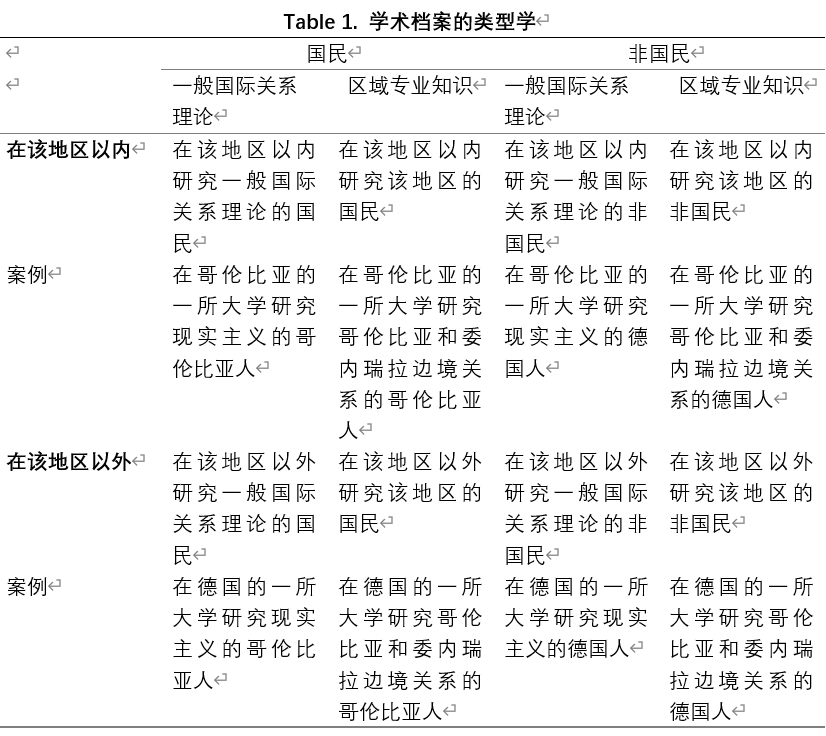

收录于合集 #理论研究 96个

作品简介
【作者】 Maiken Gelardi，丹麦奥尔胡斯大学政治学系博士
【编译】 石稚瑄（国政学人编译员，国际关系学院国际政治系）
【校对】 朱文菡 杨朔
【审核】 阮镇炜
【排版】 胡蝶
【美编 】方引弓
【来源】 Maiken Gelardi. (2019). Moving Global IR Forward — A Road Map. International Studies Review , 22(4), 830-852. doi: 10.1093/isr/viz049
【归档】 《国际关系前沿》2021年第3期，总第30期。
期刊简介
《国际研究评论》（International Studies Review）是由牛津大学出版社代表国际研究协会（International Studies Association）出版的同行评审学术期刊，以季刊形式发行。该刊旨在帮助：(a)学者进行将影响未来国际研究领域的对话和辩论；(b)研究生和本科生了解国际研究的主要问题，并发现有前景的研究机会；(c)教育者跟上新思想和新研究。该刊2019年影响因子2.232。
推动全球国际关系理论前进
—一份路线图
Moving Global IR Forward
—A Road Map
Maiken Gelardi
内容提要
许多学科分析都认为国际关系作为一门学科，以西方为中心，而忽视了本民族的观点。全球国关学界越发认同现在是超越学科批评的时候了，但学者们对于如何进行持不同意见。三个关键问题仍在被讨论：谁能发言，如何本土化以及如何让本土理论全球化。基于此，本文提出了三个相互关联的意见。首先，通过结合关于学者出身、其在当地环境中的嵌入性和地理位置这些通常孤立的讨论，形成了学术档案的类型学。其次，本文确定了在中心国家之外发现和发展理论的三种主要策略。第三，本文为将本土理论应用于更大的全球范围提供了四种不同的路径，强调全球南方国家的理论不必一定限于其“本土”地区。这三项意见共同构成了如何推进全球国际关系学研究议程的全面路线图。本文举了一些针对拉丁美洲的例子，突出了该路线图的好处，同时也呈现了在全球国际关系学辩论中经常被忽视的区域理论辩论。
文章导读
01
导论
为什么没有非西方的国际关系理论？ 近年来，这个问题经常被问到，强调国际关系学是以西方理论、方法论和学者为主导的以西方为中心的学科。阿米塔夫·阿查亚（Amitav Acharya）呼吁全球国际关系学者“从非西方背景出发，以自己的方式发展概念和方法，不仅将其应用于本土，还需应用到更大的全球范围中”。本文认为，这场辩论的核心问题之一是，学者们在如何建立全球国际关系学方面缺乏共识。这意味着我们留下了令人印象深刻的批判性著作，但是超越批判的尝试显得支离破碎且脱节。
作者确定了三个在全球国际关系学框架内部有争议的问题： 谁能发言，如何本土化以及如何让本土理论全球化。 对这三个问题的不同答案为我们提供了建立全球国际关系学的不同途径。通过确定不同途径以及不同路线的陷阱，本文有助于推进全球国际关系学的辩论，使其超越对以西方为中心的国际关系学的批判。
02
少数人的国际关系理论
比尔斯泰克（Biersteker）重新评估了斯坦利·霍夫曼（Stanley Hoffmann）对狭隘主义的主张，其结论是：美国国际关系学狭隘主义的本质是理性主义、实证主义、美国中心、只用一种语言、新近发表出版、由男性撰写。这种狭隘主义的作风意味着专注于全球南方国家的（外国）学者稀缺，而且如果他们以英语以外的其他语言出版，他们将被排除在辩论之外。《超越西方的世界》丛书（the Worlding beyond the West book series）研究了国际关系知识如何在世界各地的不同地点产生，其结论是“美国学会在国际关系中的主导地位以多种方式体现，从讲师人数、所提供的博士学位课程数量、在读博士生人数和论文数量、大学出版社和学术期刊的数量到美国所采用的认识论、理论和方法论路径在各国学术界的主导地区” （Tickner and Blaney 2012, 6)。
科学社会学、后实证主义、后殖民主义等对此提出了批判。这些流派所研究的对象变成了学术界内部无形的结构，显示了西方科学观如何影响本体论、方法论和科学设计。 因此，呼吁建立一种更加全球化的国际关系学，首先需要暴露非西方学者和非西方思想边缘化的问题。这是向前迈进的重要一步，但还不足以改变既有叙事本身。
03
属于其他国家的国际关系学？
批判性的学科自我反思是推动国际关系学向前发展的必不可少的一部分，但人们越来越多地同意，我们需要超越批判，并利用全球南方国家的观点着手建立新的学科。这些分析和路径丰富了我们对差异的理解，并证明了国际关系学在其他地区可能是相似的或不同的。这些观点经常局限于单独描述自己的地区，而没有在其他地方获得认可，这使得它们在性质上更具国家/地区性而不是国际性。关键问题是 如何使这些南方国家的理论全球化？另外两个基本问题是：（1）关于学术身份（谁能谈论全球南方国家？谁能为全球南方国家发言？西方学者的学术贡献算不算全球南方国家的观点？）；（2）这些全球南方国家的理论贡献可能是什么样的？
对这些问题看法的分歧意味着，全球国际关系的理论化采用了多种形式，而这导致了各种看似（欺骗性地）脱节的见解。在三个关键问题上需要更实质性的反映：（1）学术身份问题；（2）如何发现/发展本土理论；（3）如何研究这些本土理论的适用范围（图1）。以下部分将对这三个问题进行反思，从而为推动全球国际关系学辩论提供所需的全面路线图。

04
谁能发言
在迈向全球国际关系学的过程中，第一个分歧的问题是学术身份。谁能为全球南方国家代言？本文试图通过一种不同学术档案的类型学来弥合研究领域的争议和后西方的批判，同时包含了经常被忽视的地理位置问题。

区域知识的必要性-区域研究之争 _ ****_
如果我们想获得更多关于全球南方国家的观点，这些观点应该来自专长于研究全球南方国家的人，还是一般的国际关系理论家也可以对此提供有效的反映？区域研究的争议反映了社会科学专家与区域研究专家之间关于如何进行区域分析的紧张关系。尽管许多区域专家强调其所研究地区的特殊性并认为需要深入的了解，但社会科学专家认为，可以使用同一理论视角来分析不同的社会。根据区域专家的说法，不研究拉丁美洲历史和政治的拉丁美洲人不一定比研究该地区的外国学者在谈论该地区方面具备更大优势。
国民或非国民-后西方批评 _ ****_
作为人和学者，我们都受到经历的影响，并且由于我们无法将自己与自身经历区分开，所以这会影响我们如何看待世界。因此，西方学者和全球南方国家学者可能对相同的事物有不同的看法，或者专注于不同的问题，但是从“谁得以出版”的角度看，中心论意味着我们目前仅从一种观点（西方）来看事物，从而忽略了其他叙述和对世界的理解。一些学者批评西方学者为全球南方国家代言，而不是让全球南方国家的学者为他们自己的国家代言。而反对这种立场的批评观点是，这冒着一种新型狭隘主义的风险，不利于实现更加多元和包容的全球国际关系学的目标。
在区域内还是区域外-位置问题 _ ****_
在这些辩论中似乎忽略了地理上的位置问题。在当今全球化的社会中，学者并不局限于自己所在的地区，学者之间的交流非常畅通。在哥伦比亚工作了十七年的德国学者与在过去十七年中居住在德国的哥伦比亚人相比，前者是否在谈论哥伦比亚方面处于劣势？尽管一些区域学者生活在他们所研究的地区，但许多学者并不在，这使地理位置本身成为一个被忽视的重要因素。
结合三种不同辩论的论点，作者创建了以上详尽的类型学，确定了 八种理想的学术档案类型 。作为说明，作者介绍了三种不同的档案。学者A是一所英国大学的英国教授，致力于国际关系理论，专注于拉丁美洲。A的类型是“ 在该地区以外研究一般国际关系理论的非国民（nonnational working outside the region on general IR） ”。B是哥伦比亚人，也是同一所英国大学的教授，主要研究一般国际关系理论，关注拉丁美洲。B的类型是“ 在该地区以外研究一般国际关系理论的国民（national working outside the region on general IR） ”。根据后西方阵营的观点，B的民族和生活经历使其更适合于谈论拉丁美洲。C是英国人，是哥伦比亚大学的教授，专注于地区问题。C的类型则是“ 在该地区以内研究该地区的非国民（nonnational working in the region on the region） ”。区域研究的学者可能认为C比其他人更合适，尽管C是英国人，但她更多地融入了该地区。这种类型学不仅对于比较不同学者的位置很有价值，而且还可以用来追踪某个学者在各个类型之间的变动。总之，进入全球国际关系学辩论时，至少需要回答三个问题：
1.是否需要地区知识才能理解一个地区？
2.是否需要来自该地区才能了解该地区？
3.是否需要在该地区工作才能了解该地区？
05
如何本土化
无论是从全球南方国家发展新理论还是发现狭隘学科中被忽视的现有理论，本文都确定了三种主要策略：（ 1）以不同方式应用现有概念，（2）修订现有理论，（3）发现或发展完全本土的理论。
不同的应用 _ ****_
全球南方国家学者或许仍然可以采用西方的概念，但以不同的方式，使国际关系“几乎相同但不完全相同”，从而参与“模仿”西方思想的过程。虽然西方试图以其统治力强行推行某些观点，但正是当地环境决定了这些思想在当地的使用方式。在拉丁美洲，西方的概念和理论得到了最广泛的应用。但是，“当观察相似的类别时，拉丁美洲学者通常会看到不同的东西”。有趣的是，拉丁美洲在认识论和方法论上似乎比其美国同行更具多样性，这可能是对概念的不同理解和使用的另一种解释。
修订版本 _ ****_
在寻求发现全球南方国家在概念和方法上的相似性或差异性时，结果常常落在两者之间，因为理论创新通常是通过理论修订而不是全新的理论发展而产生的。与以不同方式应用相同概念相比，理论修订更加偏离于主流国际关系学。理论修订意味着有意调整现有的国际关系理论，使其更适合于理解所研究地区的特殊性。拉丁美洲最著名的例子之一是卡洛斯·埃斯库德（Carlos Escudé）的外围现实主义理论。外围现实主义理论最初是由埃斯库德发展起来的，用以解释阿根廷梅内姆政府的外交政策，并根据阿根廷的经验对现实主义进行了修订（Escudé 1995）。
本土理论 _ ****_
激进的本土理论不是接受现有的假定，而是从本土基础开始，然后通过自己的方式对这些本土实践进行概括来构建理论。考虑到西方概念的范围和影响，很难找到完全本土化的理论，这可能会使其他两种策略更加可行和适合。依附理论是国际上最著名的本土理论的例子之一，因为它是为数不多的在全球引起共鸣的南方国家理论之一（尽管它经常以扭曲的方式传播）。本土理论导致其他理论创新的一个例子是阿根廷和巴西的自治思想，其融合了依附理论、现实主义和相互依存的概念。这也是“拉丁美洲混合模型”的一个例子，是拉丁美洲国际关系学最明显的特征之一。
06
如何让本土理论全球化？
修订后的理论不仅可能会促进对特定区域的了解，而且可能有助于研究世界其他地区，而本土理论可能在其特定区域之外具有分析效用。本文将重点介绍四种不同的方法： （1）新实证主义理论检验（2）比较区域研究（3）批判理论和（4）新路径。
理论检验-一种新实证主义路径 _ ****_
新实证主义路径要求根据当地理论生成可检验的假设，然后检验将这些假设能否成功适用于其他地方环境。因此，该方法的目的是发现系统的跨案例共变。正如杰克逊所说，“无论是大样本还是小样本，新实证主义比较都有一个最终目标，那就是披露跨案例的共变，以便可以对假设进行评估”。新实证主义路径最适合那些致力于严格解释性理论以及在哲学本体论上持现象主义和心物二元论的学者。
比较区域研究-一种情境相关的路径 _ ****_
比较区域研究框架（CAS）基于这样的信念，即社会科学需要特定区域的深层情境知识，但是这种知识可能在特定区域之外具有相关性。其被定义为“将一个或多个区域的深厚区域知识与其他国家或经验实体进行比较的方法结合起来的研究”。在该框架中，理论的适用范围不是根据其做出精确预测的能力来评估，而是根据其是否有助于我们提出关于在不同背景下的事物如何、何时以及在何种程度上起作用的问题。
跨界解构-一种批判性路径 _ ****_
批判理论以自己的方式跨越国界和地区。尽管其目标不是发现伟大的普适理论，而是解构叙事，但这些批评在不同地方引起了共鸣。关于学术界偏见和权力失衡的这些见解已经遍及各个地区，鼓舞着人们研究和阐明塑造世界其他地方学术界的权力结构。批判性的女性主义和后殖民主义研究提供了关于国际关系学内部权力关系的观点，并对已建立的叙述提出了疑问。一般而言，批判理论提供了一种方法，可用于提出有关国际关系分析中使用的理论和类别的问题，以探究国际关系如何以及为何依赖于对人、领土和知识在理论和实践上的区分。
不走寻常路-一种新路径 _ ****_
一些学者指出了这样一个事实，即现有的本体论，方法论和科学设计受到西方科学观的影响。尽管前三种方法的方法论观点不同，但它们都仍与既定的（西方）方法论相对应，虽然修订的理论可能在某种程度上与既有的方法论相对应，但本土理论尤其可能建立在完全不同的事物上。这样的理论甚至可能不符合理论的既定定义，但可能更恰当地称之为“知识主张”（knowledge- claims）。如果这些知识主张不符合既定的方法论，那么我们就不能期望将它们以与之相对应的方式加以应用。为了尊重这些知识主张，而又不使它们符合和遵循既定的西方标准，我们需要敞开大门，开辟一条人迹罕至的道路，并为这种知识主张如何传播到其他环境考虑新的未探索的途径。
07
结论
全球国际关系学可以被视为对揭露该学科西方偏见和狭隘主义的分析的一种回应。尽管我们需要就该学科的狭隘性质进行不断的辩论，但现在该是集中精力利用这些观点去解释国际关系的时候了。本文确定了三个关键的有争议的问题：谁能发言，如何本土化以及如何让本土理论全球化。对这三个问题的不同答案为全球国际关系学提供了不同的研究路径。
构成路线图的这三个指导性问题在发展中地区都十分突出，这些观点不仅适用于拉丁美洲，也适用于非洲、亚洲。但这并不是说在不同地区的理论看起来相似。每个地区都可能表现出自己的特殊性。尽管如此，该路线图仍是有用的工具，可用于比较和组织有关此类异同的讨论。
译者评述
本文通过批判以西方为中心的国际关系学，呼吁推动全球国际关系学研究进程，进而引出三个关键问题：谁能发言，如何本土化以及如何让本土理论全球化。对于第一个问题“谁能发言”，作者通过对三个问题的不同回答（是否需要地区知识、来自该地区、在该地区工作才能了解该地区），划分了8种学术档案类型。对这些问题的肯定答案必然将某些学者排除在外，这反而带来了狭隘主义；但否定答案可能导致现有的狭隘主义继续发展。尽管如此，类型学依然是反映学术身份的有用工具。对于第二个问题“如何本土化”，作者提出三种方法：以不同方式应用现有概念，修订现有理论，发现或发展完全本土的理论。对于第三个问题“如何让本土理论全球化”，作者提出四种方法：新实证主义理论检验，比较区域研究，批判理论和新方法。作者认为，新实证主义理论检验可与强有力的解释性理论很好地配合，比较区域研究适合于内容相关研究，批判理论提出询问传播批评，新路径质疑前三种的方法论。对这三个关键问题的回答共同构成了如何推动全球国际关系理论研究议程的路线图。
本文最重要的意义在于超越了全球国际关系理论辩论的内部批判，提出了三种本土化的类型和四种全球化的路径。这对于推进全球国际关系理论研究无疑具有积极意义。“全球国际关系学”首先由阿米塔夫·阿查亚（Amitav Acharya）和巴里·布赞（Barry Buzan）正式提出创立。其根本原则是多元主义，质疑西方国际关系理论的主导地位，提倡非西方国家发展新的理论。全球国际关系学的兴起促进了中国国际关系理论的发展。中国成为非西方国际关系理论重要的来源，比如秦亚青的关系理论、阎学通的道义现实主义和赵汀阳的天下主义。国际关系学正在从西方中心的学科向全球性的学科发展，中国也正在成为其中日益重要的一部分，在这一背景下本文提出的路线图给了我们有益的启示。
参考文献
[1] 阿米塔夫·阿查亚. 全球国际关系学与国际关系理论的中国学派：两者是否兼容[J]. 世界经济与政治, 2015(2).
[2] 秦亚青. 全球国际关系学与中国国际关系理论[J]. 国际观察, 2020(2).
[3] 阿米塔·阿查亚、巴里·布赞. 迈向全球国际关系学：国际关系学科百年反思[J]. 中国社会科学评价, 2019(4).
词汇整理
文章观点不代表本平台观点，本平台评译分享的文章均出于专业学习之用, 不以任何盈利为目的，内容主要呈现对原文的介绍，原文内容请通过各高校购买的数据库自行下载。
好好学习，天天“在看”

国政学人
支持学术公益与知识传播
微信扫一扫赞赏作者 __赞赏
已喜欢，对作者说句悄悄话
取消 __
发送给作者
发送
最多40字，当前共字
上一页 1/3 下一页
长按二维码向我转账
支持学术公益与知识传播
受苹果公司新规定影响，微信 iOS 版的赞赏功能被关闭，可通过二维码转账支持公众号。